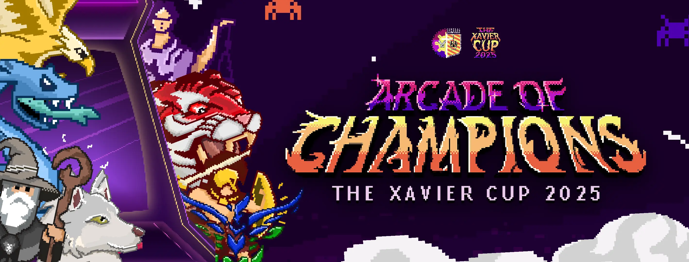

01
The Xavier Cup - 2025
A visual identity for Xavier University's annual Intramurals that uses 8-bits aesthetics, pixel art, and a bold color palette to create a fun and energetic brand system. This project showcases creative problem-solving and attention to detail in visual branding.